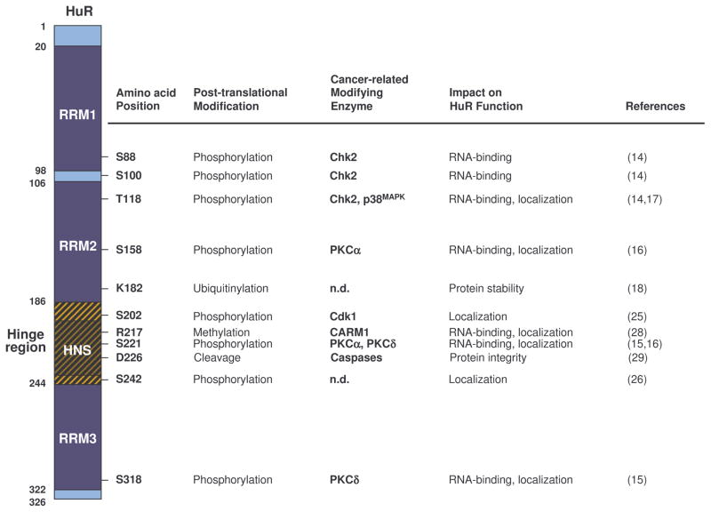
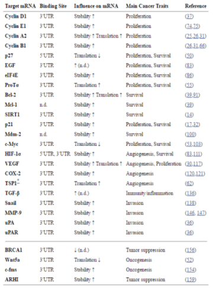
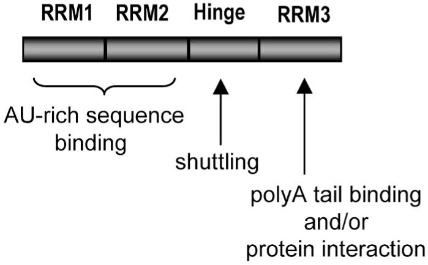
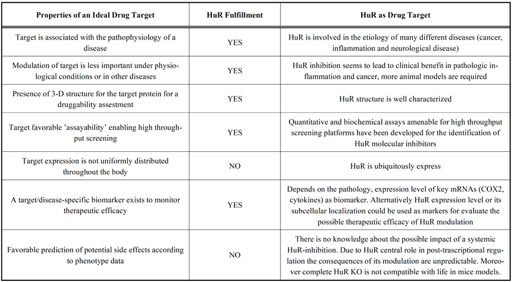
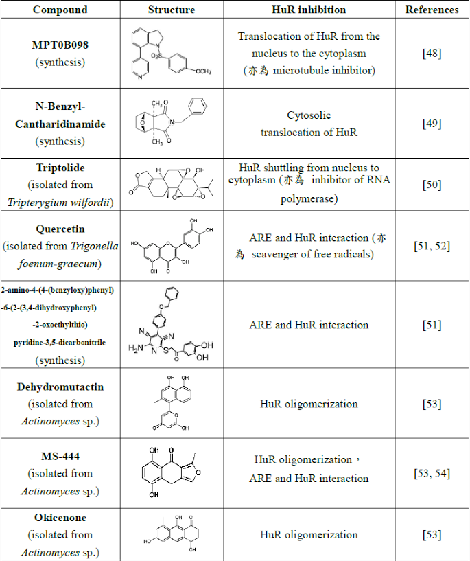

HuR Introduction
(1) HuR introduction
Human antigen R (hereinafter referred to as HuR), which is one of the RNA-binding proteins (RBPs), is responsible for regulating the splicing, stability and translation of mRNA [1, 2].
The three characteristics of the HuR protein are as follows:
- 1. It interacts with mRNA.
-
The binding site of the HuR protein to mRNA is predominantly in the adenylate-uridylate- or uridylate-rich sequence elements (ARE) [1] in the 3'-untranslated region (3'-UTRs), which interacts with the mRNA via three RNA recognition motif (RRM) field. Among them, two N-terminal domains (RRM1, RRM2) are responsible for binding U-rich RNA sequences, while the C-terminal domain (RRM3) is responsible for stabilizing the HuR-RNA complex. In addition, the hinge region which contains HuR nucleocytoplasmic shuttling sequence (HNS), is responsible for linking RRM2 and RRM3.[2] (See (2) HuR and post-transcriptional regulation for details)
 Figure. B-1. HuR protein and post-translational modification by cancer-related enzymes.
Reference: Uren, Philip J. et al. “Genomic Analyses of the RNA-Binding Protein Hu Antigen R (HuR) Identify a Complex Network of Target Genes and Novel Characteristics of Its Binding Sites.” The Journal of Biological Chemistry 286.43 (2011): 37063–37066. PMC. Web. 8 Oct. 2017.
- 2. It plays a key role in the inflammatory response. (See (3) HuR and inflammation for details)
-
Table. B-1: HuR influence on inflammtory process. 
Reference: Uren, Philip J. et al. “Genomic Analyses of the RNA-Binding Protein Hu Antigen R (HuR) Identify a Complex Network of Target Genes and Novel Characteristics of Its Binding Sites.” The Journal of Biological Chemistry 286.43 (2011): 37063–37066. PMC. Web. 8 Oct. 2017.
- 3. It promotes the progress of cancer, including cell proliferation, drug resistance and angiogenesis. (See (4) HuR and psoriasis for details)
(2) HuR and post-transcriptional regulation
 Figure. B-2. Hu protein domains and their functions.
Reference: Hinman, Melissa & Lou, Hua. (2008). Diverse molecular functions of Hu proteins. Cellular and molecular life sciences : CMLS. 65. 3168-81. 10.1007/s00018-008-8252-6.
Since HuR associates with most of the intracellular reactions, such as mRNA nucleus-cytoplasm transportation and post-transcriptional modification, it is extremely crucial to physiological activities including cell metabolism and proliferation. Below are some examples of how HuR interacts with mRNA.
HuR can bind with AREs on 3’UTR upon external or physiological stimulus. It will transport the mRNA from nucleus to cytoplasm, and further control the half life and translation of mRNA [4,5].
RRM1 and RRM2 of HuR protein are involved in the recognition of mRNA, while RRM3 combines with poly(A) to maintain mRNA stability.
Previous study showed that HuR cannot interact with target mRNA when RRM3 was mutated, indicating that RRM3 plays the most important role when HuR acts out its functions [6,7,8].
When HuR locates in the nucleus, it mainly combines with pre-mRNA to assist the formation of mature mRNA [2,9]. In addition, it’s related to spliceosome complex and controls the reporter genes splicing [10,11]. Also, it takes part in mRNA alternative splicing [12] through HuR phosphorylation.
When HuR is transported into the cytoplasm, it will stabilize mRNA by attaching to its 3’UTR, thus keeping the translation process going [13].
Also, HuR can control the expression of mRNA isoforms by attaching to different polyadenylation sites on them [14,15].
(3) HuR and inflammation
More than 90% of the cytokines’ and chemokines’ mRNAs contain AREs sequence, indicating the importance of post-transcriptional regulation in the immune responses [16]. The expression of HuR in fibroblasts, T cells and macrophages can stabilize mRNA of proinflammatory cytokines TNF-α and IL-6, and then induce inflammations [17-21].
Furthermore, two proinflammatory mediators, iNOS and COX2, are also regulated by HuR. HuR enhances iNOS expression in muscle, hepatocytes and lung cancer and colorectal cancer cells via binding to 3'UTR of iNOS mRNA [22-24]. Elevated NO expression plays a critical role in inflammation, apoptosis, angiogenesis and cancer progress [25,26]. Meanwhile, HuR regulates the expression of COX2 in macrophages and glomeruli as well as the pathological growth of cancer cells such as breast cancer, ovarian cancer and colon cancer [27-29].
In addition to inflammatory molecules, HuR can also inhibit the production of anti-inflammatory protein, thrombomodulin [30]. In view of the effect of HuR on inflammatory protein expression, several studies pointed out that HuR participates in different disease states. For instance, HuR promotes a large number of TNF-α performance in rheumatoid arthritis [31,32], and the expression of COX2 affects the erosion of cartilage in arthritis [33]. Besides, HuR can increase COX2 expression of intestinal epithelial cells in inflammatory bowel disease [34].
In the process of chronic asthmatic disease, HuR increases the expression of TNF-α and GM-CSF [35] and dominates the inflammatory signaling transduction of the mediator protein or cytokines in the inflammatory diseases. Therefore, we can block the binding of HuR and mRNA as a potential treatment target.
(4) HuR and psoriasis
Among macrophage-related inflammations, we chose the commonly-seen and easily-observed disease, psoriasis, as our model. The following is a quick look on the clinical symptoms and mechanism of psoriasis, providing an insight into the improvement of these symptoms through inhibiting HuR.
Psoriasis is a long-term skin disease, which is characterized by the overgrowth of keratinocytes and vasculars along with immune cells infiltration in the skin lesions. It is associated with obesity and cardiovascular diseases. On the lesioned skin region, erythema and scales can be significantly observed, which severely undermine patients’ quality of life [36].
Similar to other chronic inflammatory diseases, such as rheumatoid arthritis and inflammatory bowel disease, Th1- and Th17-related cytokines, including TNF-α, Type I-IFN and IL-17, play a major role as pathogenic factor [37].
Immune cells, dendritic cells, T-cells, macrophages and leukocytes can cause infiltration in dermis [38], and epidermis (leukocytes only).When lots of leukocytes accumulate in the stratum corneum of epidermis, it is called microbe abscess[39].
As keratinocytes in the epidermis, the main cells that make up our skin, keep proliferating and differentiating, they will normally differentiate into a sort of karyocytes (cells without nucleus) and attach to each other through junction complex to form a physical barrier [40] that separates our body from the outside world.
However, at the lesioned sites, keratinocytes will undergo abnormal overgrowth and differentiation, which leads to the continual existence of their cell nuclei and the soaring amount of themselves, since infiltrated immune cells will not only promote inflammations at the lesioned site through cytokines but also secrete growth factors including KGF, EGF, and VEGF. On the other hand, keratinocytes will produce cytokines, which trigger inflammatory, cytokines and chemokines such as CCL2 and CXCL12, which attract more immune cells to the lesioned sites [41].
A large number of HuR proteins are detected in the cytoplasm of the psoriasis-keratinocytes. The HuR proteins contribute to the high expression of cytokine IL-20, and thus have an impact on the development of psoriasis [42]. In addition, according to a previous study, defective NF-κB (IκB) kinase 2 (IKK2) produced in the keratinocytes could possibly induce psoriasis [43]. However with a lack of the macrophages-produced cytokines, the induced psoriasis will not be able to maintain any longer. Further on the CD18 hypo mouse model, a study found that TNF-α produced by macrophages is the definitive factor to enable the maintenance of psoriasis [44]. Therefore, it is suggested that the inhibition of the HuR proteins in the keratinocytes and macrophages could be an effective strategy to alleviate the symptoms of psoriasis.
(5) HuR and cancer
Previous studies revealed that overexpressed HuR and abnormal nuclear-cytoplasmic ratio are highly correlated with several cancers. [45-48]
One of the studies proposed that owing to the character of HuR enhancing the levels of proteins which promotes cell proliferation, elevates cell survival rate, boosts local angiogenesis, assists the cancer cell evading from immune recognition, and facilitates cancer cell invasion and metastasis, HuR exerts a tumorigenic function by enabling these cancer phenotypes. [49]
The biopsy samples of human small-cell lung carcinoma, esophageal squamous cell carcinoma, primary renal cell carcinoma, upper urinary tract urothelial carcinoma and bladder cancer show that the accumulation of HuR in cytoplasm has positive correlation with grading of biopsy, metastasis, degree of cancer cell invasion and survival rate [50-53]. Moreover, in cases of oral squamous cell carcinoma, the expression number of HuRs is positively correlated with oncogenes and proto-oncogenes, which severely affects the prognosis and survival rate of patients [54,55]. HuR stabilizes the mRNAs of oncogenes and related growth factors in cytoplasm as a means of cancer deterioration. As a consequence, we can predict cancer progress by observing the expression of HuRs accumulated in cytoplasm. Besides, some studies have pointed out that, once the anti-apoptotic Bcl-2s produced by highly-expressed HuRs are stabilized, glioma would be allowed to become more resistant to chemotherapeutics like Topotecan, Cisplatin and Etoposide [56].
The same research also indicates that breast cancer cells have higher expression of HuR, which can stabilize the drug-resistant proteins and activate cell signaling pathways like MAPK, JNK to reduce the efficacy of Tamoxifen (a chemotherapeutic) [57] .
As a result, if we could inhibit HuR activity in patients receiving chemotherapy, the therapeutic effect would be considerably improved.
(6) HuR inhibitors as potential anti-inflammatory and anti-cancer drugs
Since HuR plays a pivotal role in the development of chronic inflammation, cancer, as well as other diseases, recently it has become a research subject that many scientists are highly interested in. The reasons why HuR is an ideal drug target are shown in Table. B-2 below, including the HuR involvement in the etiology of many different diseases, such as cancer, inflammation, and neurological disease, HuR’s well characterized structure, and its ubiquitously expression, and so on.
Table. B-2: The advantages of choosing HuR as drug target. 
Reference: Zucal C, D'Agostino V, Loffredo R, Mantelli B, NatthakanThongon, Lal P, Latorre E, Provenzani A Curr Drug Targets. 2015;16(5):499-515.
However, there are only a few studies on the development of HuR inhibitors. So far, globally related researches show the following kinds of inhibitors, some possessing other biological activities (Table. B-3).
Table. B-3: Existing HuR inhibitors. 
Reference:
- Cheng, Y. C.; Liou, J. P.; Kuo, C. C.; Lai, W. Y.; Shih, K. H.; Chang, C. Y.; Pan, W. Y.; Tseng, J. T.; Chang, J. Y. Mol Cancer Ther 2013, 12, (9), 1919-1919.
- Lee, J. Y.; Chung, T. W.; Choi, H. J.; Lee, C. H.; Eun, J. S.; Han, Y. T.; Choi, J. Y.; Kim, S. Y.; Han, C. W.; Jeong, H. S.; Ha, K. T. Biochem Bioph Res Co 2014, 447, (2), 371-377.
- Sun, L. X.; Zhang, S.; Jiang, Z. Z.; Huang, X.; Wang, T.; Huang, X.; Li, H.; Zhang, L. Y. Biochem Bioph Res Co 2011, 416, (1-2), 99-105.
- Chae, M. J.; Sung, H. Y.; Kim, E. H.; Lee, M.; Kwak, H.; Chae, C. H.; Kim, S.; Park, W. Y. Exp Mol Med 2009, 41, (11), 824-831.
- Kwak, H.; Jeong, K. C.; Chae, M. J.; Kim, S. Y.; Park, W. Y. Bmb Rep 2009, 42, (1), 41-46.
- Meisner, N. C.; Hintersteiner, M.; Mueller, K.; Bauer, R.; Seifert, J. M.; Naegeli, H. U.; Ottl, J.; Oberer, L.; Guenat, C.; Moss, S.; Harrer, N.; Woisetschlaeger, M.; Buehler, C.; Uhl, V.; Auer, M. Nature Chemical Biology 2007, 3, (8), 508-515.
- Bolognani, F.; Gallani, A. I.; Sokol, L.; Baskin, D. S.; Meisner-Kober, N. J Neurooncol 2012, 106, (3), 531-42.
- Zhu, Z.; Zhao, Y.; Li, J.; Tao, L.; Shi, P.; Wei, Z.; Sheng, X.; Shen, D.; Liu, Z.; Zhou, L.; Tian, C.; Fan, F.; Shen, C.; Zhu, P.; Wang, A.; Chen, W.; Zhao, Q.; Lu, Y. Mol Carcinog 2016, 55, (10), 1399-410.
- Shin, D. S.; Kim, H. N.; Shin, K. D.; Yoon, Y. J.; Kim, S. J.; Han, D. C.; Kwon, B. M. Cancer Research 2009, 69, (1), 193-202.
Even these small-molecular compounds are proven to have biological activity to inhibit HuR function, their in vivo therapeutic efficacy is rarely confirmed. RRM1 and RRM2 in HuR family, via modeling analysis by computer, are found to share a highly-conserved similar sequence. It has been shown that the competitive combination of chemically synthesized small fragment peptides to these two sites is found to stabilize expression of NOVA-1 and VEGF mRNA [58, 59]. This indicates that small-molecular drugs with binding affinity can be discovered through computer simulation.
Reference:
- Dassi, E.; Zuccotti, P.; Leo, S.; Provenzani, A.; Assfalg, M.; D'Onofrio, M.; Riva, P.; Quattrone, A. Nucleic Acids Res 2013, 41, (5), 3201-16.
- Mukherjee, N.; Corcoran, D. L.; Nusbaum, J. D.; Reid, D. W.; Georgiev, S.; Hafner, M.; Ascano, M.; Tuschl, T.; Ohler, U.; Keene, J. D. Mol Cell 2011, 43, (3), 327-339.
- Peng, S. S.; Chen, C. Y.; Xu, N.; Shyu, A. B. Embo J 1998, 17, (12), 3461-70.
- Peng, S. S. Y.; Chen, C. Y. A.; Xu, N. H.; Shyu, A. B. Embo J 1998, 17, (12), 3461-3470.
- de Silanes, I. L.; Zhan, M.; Lal, A.; Yang, X. L.; Gorospe, M. P Natl Acad Sci USA 2004, 101, (9), 2987-2992.
- Hinman, M. N.; Lou, H. Cell Mol Life Sci 2008, 65, (20), 3168-3181.
- Brennan, C. M.; Steitz, J. A. Cell Mol Life Sci 2001, 58, (2), 266-277.
- Ma, W. J.; Chung, S.; Furneaux, H. Nucleic Acids Research 1997, 25, (18), 3564-3569.
- Lebedeva, S.; Jens, M.; Theil, K.; Schwanhausser, B.; Selbach, M.; Landthaler, M.; Rajewsky, N. Mol
- Chen,Y.I.G.;Moore,R.E.;Ge,H.Y.;Young,M.K.;Lee,T.D.;Stevens,S.W.NucleicAcidsResearch 2007, 35, (12), 3928-3944.
- Wang, H. W.; Molfenter, J.; Zhu, H.; Lou, H. Nucleic Acids Research 2010, 38, (11), 3760-3770.
- Akaike, Y.; Masuda, K.; Kuwano, Y.; Nishida, K.; Kajita, K.; Kurokawa, K.; Satake, Y.; Shoda, K.; Imoto, I.; Rokutan, K. Mol Cell Biol 2014, 34, (15), 2857-2873.
- Dutertre, M.; Chakrama, F. Z.; Combe, E.; Desmet, F. O.; Mortada, H.; Espinoza, M. P.; Gratadou, L.; Auboeuf, D. Nat Commun 2014, 5.
- Naipauer, J.; Gattelli, A.; Degese, M. S.; Slomiansky, V.; Wertheimer, E.; Lamarre, J.; Castilla, L.; Abba, M.; Kordon, E. C.; Coso, O. A. Biochem J 2013, 454, 345-357.
- Zhu, H.; Zhou, H. L.; Hasman, R. A.; Lou, H. Journal of Biological Chemistry 2007, 282, (4), 2203- 2210.
- Anderson, P. Nature Reviews Immunology 2010, 10, (1), 24-35.
- Nabors, L. B.; Gillespie, G. Y.; Harkins, L.; King, P. H. Cancer Research 2001, 61, (5), 2154-2161.
- Dixon, D. A.; Tolley, N. D.; King, P. H.; Nabors, L. B.; McIntyre, T. M.; Zimmerman, G. A.; Prescott, S. M. J Clin Invest 2001, 108, (11), 1657-1665.
- Sung, S. C.; Kim, K.; Lee, K. A.; Choi, K. H.; Kim, S. M.; Son, Y. H.; Moon, Y. S.; Eo, S. K.; Rhim, B. Y. J Vasc Res 2009, 46, (1), 36-44.
- Wang, J. G.; Collinge, M.; Ramgolam, V.; Ayalon, O.; Fan, X. H. C.; Pardi, R.; Bender, J. R. Journal of Immunology 2006, 176, (4), 2105-2113.
- Zhou, H.; Jarujaron, S.; Gurley, E. C.; Chen, L.; Ding, H.; Studer, E.; Pandak, W. M., Jr.; Hu, W.; Zou, T.; Wang, J. Y.; Hylemon, P. B. Atherosclerosis 2007, 195, (1), e134-43.
- Di Marco, S.; Mazroui, R.; Dallaire, P.; Chittur, S.; Tenenbaum, S. A.; Radzioch, D.; Marette, A.; Gallouzi, I. E. Mol Cell Biol 2005, 25, (15), 6533-45.
- Linker,K.;Pautz,A.;Fechir,M.;Hubrich,T.;Greeve,J.;Kleinert,H.NucleicAcidsRes2005,33,(15), 4813-27.
- Matsui, K.; Nishizawa, M.; Ozaki, T.; Kimura, T.; Hashimoto, I.; Yamada, M.; Kaibori, M.; Kamiyama, Y.; Ito, S.; Okumura, T. Hepatology 2008, 47, (2), 686-97.
- Srikantan, S.; Gorospe, M. Front Biosci (Landmark Ed) 2012, 17, 189-205.
- Kusaka, G.; Uno, K.; Iijima, K.; Shimosegawa, T. World J Gastrointest Pathophysiol 2016, 7, (1), 131- 7.
- Dixon, D. A.; Tolley, N. D.; King, P. H.; Nabors, L. B.; McIntyre, T. M.; Zimmerman, G. A.; Prescott, S. M. J Clin Invest 2001, 108, (11), 1657-65.
- Sengupta, S.; Jang, B. C.; Wu, M. T.; Paik, J. H.; Furneaux, H.; Hla, T. J Biol Chem 2003, 278, (27), 25227-33.
- Cok, S. J.; Acton, S. J.; Morrison, A. R. Journal of Biological Chemistry 2003, 278, (38), 36157-36162.
- Yeh, C. H.; Hung, L. Y.; Hsu, C.; Le, S. Y.; Lee, P. T.; Liao, W. L.; Lin, Y. T.; Chang, W. C.; Tseng, J. T. Mol Biol Cell 2008, 19, (9), 3812-3822.
- Sugihara, M.; Tsutsumi, A.; Suzuki, E.; Wakamatsu, E.; Suzuki, T.; Ogishima, H.; Hayashi, T.; Chino, Y.; Ishii, W.; Mamura, M.; Goto, D.; Matsumoto, I.; Ito, S.; Sumida, T. Arthritis Rheum 2007, 56, (7), 2160-2169.
- Suzuki, E.; Tsutsumi, A.; Sugihara, M.; Mamura, M.; Goto, D.; Matsumoto, I.; Ito, S.; Ikeda, K.; Ochiai, N.; Sato, Y.; Sumida, T. Int J Mol Med 2006, 18, (2), 273-278.
- Nieminen, R.; Vuolteenaho, K.; Riutta, A.; Kankaanranta, H.; van der Kraan, P. M.; Moilanen, T.; Moilanen, E. European Journal of Pharmacology 2008, 587, (1-3), 309-316.
- Di Mari, J. F.; Saada, J. I.; Mifflin, R. C.; Valentich, J. D.; Powell, D. W. Am J Physiol-Gastr L 2007, 293, (4), G719-G728.
- Esnault, S.; Malter, J. S. Journal of Immunology 2003, 171, (12), 6780-6787.
- Correia, B.; Torres, T. Acta Biomed 2015, 86, (2), 121-9
- Reich, K. J Eur Acad Dermatol 2012, 26, 3-11.
- Griffiths, C. E. M.; Barker, J. N. W. N. Lancet 2007, 370, (9583), 263-271.
- Christophers, E.; Metzler, G.; Rocken, M. Brit J Dermatol 2014, 170, (1), 59-65.
- Bowcock, A. M.; Krueger, J. G. Nature Reviews Immunology 2005, 5, (9), 699-711.
- Lowes, M. A.; Bowcock, A. M.; Krueger, J. G. Nature 2007, 445, (7130), 866-873.
- Garcin, G.; Guiraud, I.; Lacroix, M.; Genthon, C.; Rialle, S.; Joujoux, J. M.; Meunier, L.; Lavabre- Bertrand, T.; Stoebner, P. E.; Le Gallic, L. J Invest Dermatol 2015, 135, (11), 2732-2741.
- Stratis, A.; Pasparakis, M.; Rupec, R. A.; Markur, D.; Hartmann, K.; Scharffetter-Kochanek, K.; Peters, T.; van Rooijen, N.; Krieg, T.; Haase, I. J Clin Invest 2006, 116, (8), 2094-104.
- Wang, H.; Peters, T.; Kess, D.; Sindrilaru, A.; Oreshkova, T.; Van Rooijen, N.; Stratis, A.; Renkl, A. C.; Sunderkotter, C.; Wlaschek, M.; Haase, I.; Scharffetter-Kochanek, K. J Clin Invest 2006, 116, (8), 2105- 14.
- Lopez de Silanes, I.; Fan, J.; Yang, X.; Zonderman, A. B.; Potapova, O.; Pizer, E. S.; Gorospe, M.Oncogene 2003, 22, (46), 7146-54.
- Denkert, C.; Koch, I.; von Keyserlingk, N.; Noske, A.; Niesporek, S.; Dietel, M.; Weichert, W. Mod Pathol 2006, 19, (9), 1261-9.
- Yi, X.; Zhou, Y.; Zheng, W.; Chambers, S. K. Aust N Z J Obstet Gynaecol 2009, 49, (1), 93-8.
- Lim, S. J.; Kim, H. J.; Kim, J. Y.; Park, K.; Lee, C. M. Int J Gynecol Pathol 2007, 26, (3), 229-234.
- Abdelmohsen, Kotb, and Myriam Gorospe. “Post-Transcriptional Regulation of Cancer Traits by HuR.” Wiley interdisciplinary reviews. RNA 1.2 (2010): 10.1002/wrna.4. PMC. Web. 8 Oct. 2017.
- Wang, J.; Wang, B.; Bi, J.; Zhang, C. Med Oncol 2011, 28 Suppl 1, S577-85.
- Zhang, C.; Xue, G. L.; Bi, J. W.; Geng, M.; Chu, H. L.; Guan, Y. P.; Wang, J.; Wang, B. C. Tumor Biol 2014, 35, (1), 73-80.
- Liang, P. I.; Li, W. M.; Wang, Y. H.; Wu, T. F.; Wu, W. R.; Liao, A. C.; Shen, K. H.; Wei, Y. C.; Hsing, C. H.; Shiue, Y. L.; Huang, H. Y.; Hsu, H. P.; Chen, L. T.; Lin, C. Y.; Tai, C.; Lin, C. M.; Li, C. F. Bmc Cancer 2012, 12.
- Miyata, Y.; Watanabe, S.; Sagara, Y.; Mitsunari, K.; Matsuo, T.; Ohba, K.; Sakai, H. Plos One 2013, 8, (3).
- Cha, J. D.; Li, S.; Cha, I. H. Head Neck-J Sci Spec 2011, 33, (5), 627-637.
- Cha, J. D.; Kim, H. K.; Cha, I. H. Head Neck-J Sci Spec 2014, 36, (8), 1168-1175.
- Filippova, N.; Yang, X. H.; Wang, Y. M.; Gillespie, G. Y.; Langford, C.; King, P. H.; Wheeler, C.; Nabors, L. B. Mol Cancer Res 2011, 9, (5), 648-659.
- Hostetter, C.; Licata, L. A.; Witkiewicz, A.; Costantino, C. L.; Yeo, C. J.; Brody, J. R.; Keen, J. C. Cancer Biol Ther 2008, 7, (9), 1498-1508.
- Rossi, D.; Amadio, M.; Carnevale Baraglia, A.; Azzolina, O.; Ratti, A.; Govoni, S.; Pascale, A.; Collina, S. J Med Chem 2009, 52, (16), 5017-9.
- Amadio, M.; Pascale, A.; Govoni, S.; Laurini, E.; Pricl, S.; Gaggeri, R.; Rossi, D.; Collina, S. Chem Biol Drug Des 2013, 81, (6), 707-14.